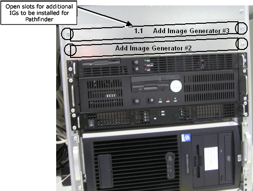
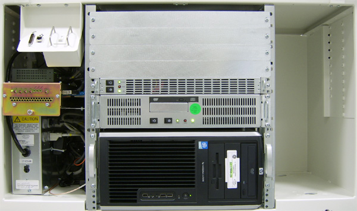
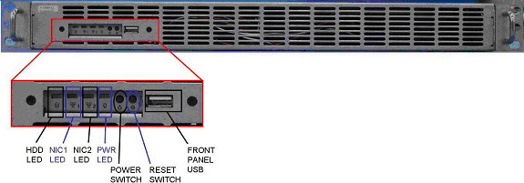
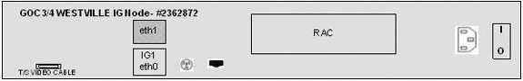
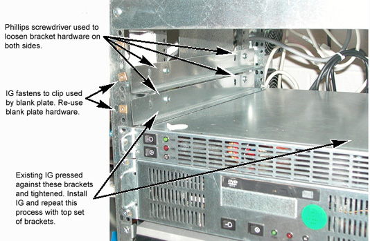
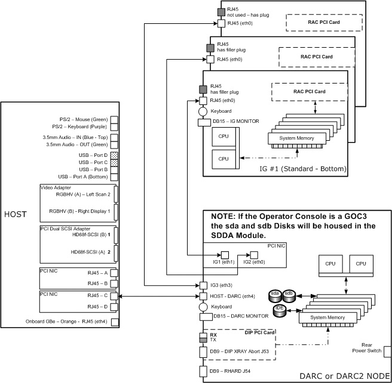
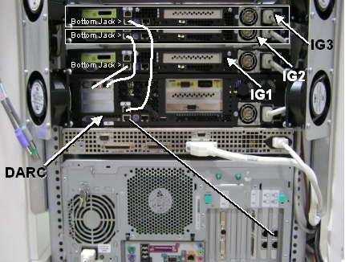
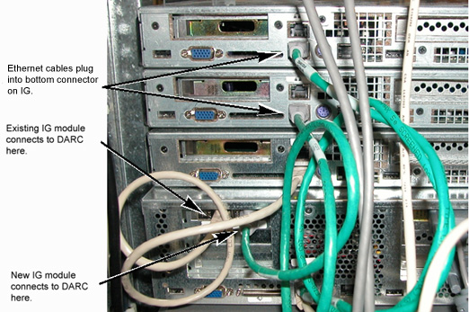

Operating Documentation
Direction 5167277-800, Rev# 8
5167277-800 - FX/Xtream SW & Upgrade Procedures
Operating Documentation |
| Last Revised: | 29 August 2007 |
| NOTE: | SDAS 4-slice, MDAS 4-slice and MDAS 8-slice systems cannot upgrade from the 1 single/standard IG Node to the 3 IG Node upgrade option. |
This procedure describes the Installation of two additional Image Generator (IG) modules for the GOC3 and GOC4 Operator Console. A GOC3 Operator Console (with DARC Node and a SDDA Module) is shown in Illustration 1.
Illustration 1: GOC3 Operator Console

The GOC4 Operator Console is similar, except a DARC2 Node and an ICOM replace the SDDA Module. A GOC4 Operator Console is shown in Illustration 2.
Illustration 2: GOC4 Operator Console

| NOTE: | Whenever a Jarrell type IG Node is used, it MUST be placed in the bottom standard slot 1 position. The Ethernet cable identifying the bottom IG #1 must be correctly connected between the DARC Node and the IG Node. If two Jarrell IG Nodes are present, the second Jarrell IG Node must be placed in slot 2 (middle). |
| NOTE: | Jarrell DARC and Jarrell IG Nodes require software release 06MW29.x or more recent. |
After installation or repositioning of the IG Node(s), several tests are required:
Communication from the DARC Node or DARC2 Node to the IG Node(s)
Perform diagnostics for the IG Node RAC(s)
| Item | Qty |
| Medium Phillips Screwdriver | 1 |
This IG Node Upgrade option requires the installation of two additional Image Generator Nodes. The IG Nodes currently available are as follow:
| Item | Part # | Manufacturer |
| IG Node (Westville) | 2362872 | Omni Tech Corp - Dedicated Computing |
| IG Node (Jarrell) | 5147443 | Omni Tech Corp - Dedicated Computing |
| Shielded Ethernet Cable (for use w/Jarrell IG Node) | 5127222-2 |
| All cable connector screw-locks must be finger-tightened, only. Do NOT use any tool to tighten cable screw-locks. | |
| Follow ALL required safety and PPE procedures customary for your organization, when working on this product. | |
| Condition | Reference |
| Jarrell DARC and Jarrell IG Nodes require software release 06MW29.x or more recent. | |
| Jarrell IG Nodes require the use of a shielded ethernet cable between the IG and DARC. | |
| Understand the conventions used in this publication | Publication Conventions |
| Only trained service personnel should service the GE CT Scanner. |
Select one of the following methods to Power OFF the Operator Console:
If Applications are up, click on the [Shut Down] icon and select [Shutdown] .
If Applications are down, open a Unix Shell at the Toolchest. Type:
{ctuser@hostname} halt
| NOTE: | (For 06MW03.X Software) IMPORTANT! Wait 1-2 minutes after the “System halted” message appears, to allow the DARC Node to properly power-down. Future SW releases (e.g., 06MW29.x) have corrected this issue. |
The Operator Console monitor will display a 'System halted' message when it is acceptable to power OFF the Operator Console.
Power OFF the Operator Console at the front panel switch.
| NOTE: | Whenever a Jarrell type IG Node is used, it MUST be placed in the bottom standard slot 1 position. The Ethernet cable identifying the bottom IG #1 must be correctly connected between the DARC Node and the IG Node. If two Jarrell IG Nodes are present, the second Jarrell IG Node must be placed in slot 2 (middle). |
| NOTE: | Jarrell DARC and Jarrell IG Nodes require software release 06MW29.x or more recent. |
Verify the presence of a Jarrell type IG Node (either existing within the Operator Console or an add/replacement IG Node). Refer to Illustration 3. If any Jarrell type IG Node is present, it must be placed into the bottom standard slot reserved for IG Node #1. IG Node #2 is positioned directly above IG Node #1. IG Node #3 is positioned directly above IG Node #2.
Illustration 3: “Jarrell” IG Node #5147443
(Sheet 1 of 2)

(Sheet 2 of 2)

Illustration 4: “Westville” IG Node #2362872
(Sheet 1 of 2)

(Sheet 2 of 2)

Remove two faceplates covering the slots for Image Generator (IG) #2 and #3. Retain the four (4) front panel screws to secure the two upgrade kit IG Nodes.
If necessary, remove the Westville type IG Node #1 and replace it with the Jarrell type IG Node. Slide the replacement IG Node into the Operator Console from the front. Replace the two (2) front mounting screws on the front of the IG Node #1. Move to the rear of the Operator Console to reconnect the Ethernet cable between the DARC Node (or DARC2 Node) and the IG Node #1. Reinstall the AC. power cord to the IG Node #1.
| NOTE: | The bottom slot is the standard slot reserved for IG Node #1. IG Node #2 is positioned directly above IG Node #1. IG Node #3 is positioned directly above IG Node #2. |
Insert IG Node #2 into the “Add Image Generator #2” slot, sliding it on the rails until flush with the front panel chassis. Refer to Illustration 5 below for additional guidance.
Illustration 5: Adjust Brackets for Best Fit

Secure IG Node #2 using two of the front panel screws.
Insert IG Node #3 into the “Add Image Generator #3” slot, sliding it on the rails until flush with the front panel chassis.
Secure IG Node #3 using the two remaining front panel screws.
Move to the rear of the Operator Console to continue the install of the Ethernet cables and AC power cords to the IG Nodes.
Connect the Ethernet cable for “Add Image Generator #2” to the DARC Node (or DARC2 Node) as shown in Illustration 6, Illustration 7, Illustration 8, and Illustration 9. This bottom jack is “IG2eth1.”
Illustration 6: DARC/IG/HOST Cabling Block Diagram

Illustration 7: DARC/IG/PC Cabling (with “Westville” Hardware Connections)

| NOTE: | The straight lines represent the original Image Generator Ethernet cabling. |
Illustration 8: DARC/IG Ethernet Cabling (with “Jarrell” Hardware Connections)

Illustration 9: DARC2 Node Rear View Connections
(Sheet 1 of 3)

(Sheet 2 of 3)

(Sheet 3 of 3)

Connect the Ethernet cable for “Add Image Generator #3” to the DARC Node (or DARC2 Node) as shown in Illustration 6, Illustration 7, Illustration 8, and Illustration 9.
Connect AC. power cable (pre-wired in chassis) to the added Image Generator #2’s AC input receptacle.
Connect AC power cable (pre-wired in chassis) to the added Image Generator #3’s AC input receptacle.
Verify the power switches (if present) located at the rear of the IG Node(s) are set to the ON position.
At the DARC Node or DARC2 Node, verify the rear power switch is set to the ON position.
Verify all other cable connections to DARC (or DARC2 Node) and IG Node(s) as shown in Illustration 6, Illustration 7 Illustration 8, and Illustration 9.
The Operator Console Power is applied and Application Software is not started. The user will verify front panel power and LAN LEDs for various Nodes within the Operator Console.
Power ON the Operator Console at the front panel switch.
Visually verify the DARC Node or DARC2 Node front panel Power LED is illuminated. If not, press the front panel power switch to apply power to the DARC Node or DARC2 Node.
At the IG Node(s), verify the rear panel power switch(es) is ON, the Ethernet cable(s) is properly connected, and the power cord(s) is plugged in.
Visually verify the IG Node(s) front panel Power LED(s) is illuminated. If not, press the front panel power switch to apply power to the IG Node(s).
Stop Applications Software from auto-starting at the 5 second Pink Box.
Perform the reconfig command on the Host Computer as root with Application Software Down to configure the Operator Console for the correct number of IG Nodes. The screen example provided is not exact but provides an understanding of what to expect.
At the Toolchest, with Application software down, open a Unix Shell.
| NOTE: | If Application Software is Up, open a Unix Shell from the Toolchest and type cleanMon as ctuser on the Host to shut down the Application Software. Wait for applications to shut down completely or the reconfig command cannot be invoked. |
With Application Software down, become root:
{ctuser@hostname} su -
Password: <Password>
[root@hostname] reconfig
Select the Config tab.
Select the Hardware tab.
Select the proper Number of IGs present in the Operator Console by clicking on 3. See example Hardware Settings screen, below.
Illustration 10: Hardware Settings Screen: Number of IGs

Verify 3 (Number of IGs) is selected.
Select the Accept tab.
The Operator Console will reboot. If necessary stop Application Software from starting up.
The DARC Node or DARC2 Node must be up to check the IG Node(s). Perform ping and rsh commands on the DARC Node or DARC2 Node, as follows:
At the Toolchest, with Application software down, open a Unix Shell.
Ping the DARC Node or DARC2 Node:
{ctuser@hostname} ping darc
Verify ping is successful.
Press <Ctrl+C> to stop ping process.
Remote Shell to the DARC Node or DARC2 Node:
{ctuser@hostname} rsh darc
Verify ctuser@darc prompt is present.
Exit from the DARC Node or DARC2 Node Remote Shell:
{ctuser@darc} exit
| NOTE: | The Unix Shell will be used again, so do not exit or close at this time. |
Verify Replacement IG Node In the instructions below, be certain to specify ig1, ig2 or ig3, as appropriate for the IG Node being tested.
| NOTE: | NOTE: Application Software must be down. |
| NOTE: | Whenever an IG Node is swapped (either the physical location or one end of the Ethernet cable), the affected IG Node requires a manual power cycle at the front panel. This manual power cycle is required for the IG Node to get an IP address and configuration information. |
Power OFF the upgraded IG Nodes at the front panel switch. See Illustration 11 or Illustration 12, depending on IG Node type.
Illustration 11: ”Westville” IG Node #2362872
Illustration 12: “Jarrell” IG Node #5147443
Power ON the upgraded IG Node(s) at the front panel switch (hold for 3-10 seconds).
Wait two to four minutes for the IG Node(s) to boot up.
In the Unix Shell, verify the cat /usr/g/config/INFO file for number of IGs active in the Operator Console:
{ctuser@hostname} cat usr/g/config/INFO
| NOTE: | If the number of IG Nodes present is incorrect, then perform the reconfig process. |
In the Unix Shell, verify the following IG Node(s) as applicable:
{ctuser@hostname} rsh darc
| NOTE: | If the IG Nodes fail the remote shell command, refer to IG Node Command List for help. IG Node power may be restarted using the ipmitool command (all configured IG Nodes must be RUNNING on the DARC Node per ifconfig). |
{ctuser@darc} su -
Password: <Password>
[root@darc] ifconfig
[root@darc] rsh ig1
[root@ig1] exit
[root@darc] rsh ig2
[root@ig2] exit
[root@darc] rsh ig3
[root@ig3] exit
[root@darc] exit
{ctuser@darc} exit
{ctuser@hostname} cd /usr/g/bin
{ctuser@hostname} ls rac*
(racdiags* are listed)
| NOTE: | The racdiags command performs IG Node rac (Recon Accelerator Card) diagnostics for all IG Nodes configured in the system from a Unix Shell on the Host Computer. Ignore any errors associated with IG Nodes not configured in the Operator Console. |
{ctuser@hostname} racdiags
{ctuser@hostname} st
Select the Service Icon.
Select [DIAGNOSTICS] .
Select [Image Generation] .
Select [Recon Data Path] .
Select [1] and [ALL]
Select [RUN]
Verify Recon Data Path tests pass.
Select [Dismiss]
Perform sanity scans (e.g., scout, axial and helical).
Verify that the images reconstruct and display properly.
Install the front and rear Operator Console covers.